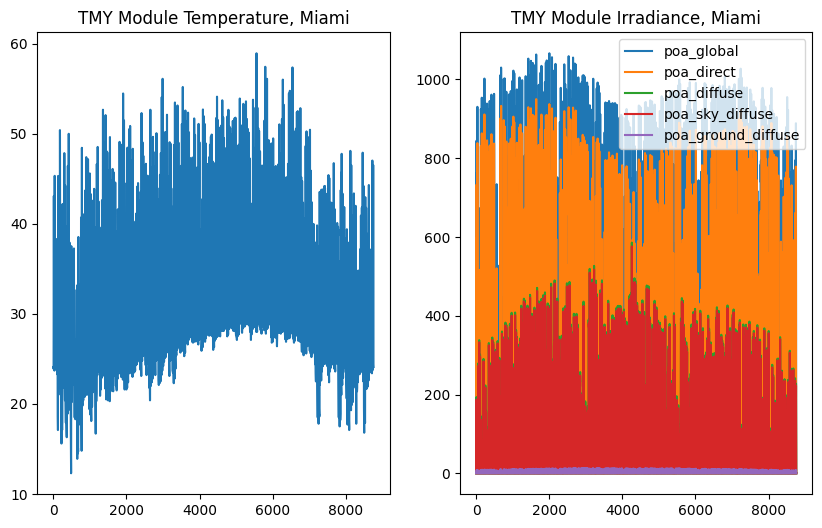

Custom Functions with Numba#
import json
import os
import numpy as np
import pandas as pd
import sympy as sp
import matplotlib.pyplot as plt
import pvdeg
Grabbing Weather Data#
We need a timeseries of weather data to feed into the symbolic degradation expression below.
By default this notebook loads a cached NSRDB TMY for Miami, FL that ships with the repo (tutorials/data/psm4_miami.csv). This keeps the notebook reproducible in CI and works offline. Set USE_LIVE_PVGIS = True in the next cell to make a live PVGIS API call for Manhattan, NYC instead.
# For reproducible CI and offline use, default to cached weather data.
# Set USE_LIVE_PVGIS=True to fetch live PVGIS TMY for Manhattan instead.
USE_LIVE_PVGIS = False
if USE_LIVE_PVGIS:
weather_df, meta_dict = pvdeg.weather.get(
database="PVGIS",
id=(40.776676, -73.971321), # manhattan (latitude, longitude)
)
else:
repo_root = os.path.dirname(os.path.dirname(pvdeg.__file__))
weather_path = os.path.join(repo_root, "tutorials", "data", "psm4_miami.csv")
meta_path = os.path.join(repo_root, "tutorials", "data", "meta_miami.json")
weather_df = pd.read_csv(weather_path, index_col=0, parse_dates=True)
with open(meta_path, "r") as f:
meta_dict = json.load(f)
---------------------------------------------------------------------------
FileNotFoundError Traceback (most recent call last)
Cell In[2], line 15
11 repo_root = os.path.dirname(os.path.dirname(pvdeg.__file__))
12 weather_path = os.path.join(repo_root, "tutorials", "data", "psm4_miami.csv")
13 meta_path = os.path.join(repo_root, "tutorials", "data", "meta_miami.json")
14
---> 15 weather_df = pd.read_csv(weather_path, index_col=0, parse_dates=True)
16 with open(meta_path, "r") as f:
17 meta_dict = json.load(f)
File /opt/hostedtoolcache/Python/3.11.15/x64/lib/python3.11/site-packages/pandas/io/parsers/readers.py:873, in read_csv(filepath_or_buffer, sep, delimiter, header, names, index_col, usecols, dtype, engine, converters, true_values, false_values, skipinitialspace, skiprows, skipfooter, nrows, na_values, keep_default_na, na_filter, skip_blank_lines, parse_dates, date_format, dayfirst, cache_dates, iterator, chunksize, compression, thousands, decimal, lineterminator, quotechar, quoting, doublequote, escapechar, comment, encoding, encoding_errors, dialect, on_bad_lines, low_memory, memory_map, float_precision, storage_options, dtype_backend)
861 kwds_defaults = _refine_defaults_read(
862 dialect,
863 delimiter,
(...) 869 dtype_backend=dtype_backend,
870 )
871 kwds.update(kwds_defaults)
--> 873 return _read(filepath_or_buffer, kwds)
File /opt/hostedtoolcache/Python/3.11.15/x64/lib/python3.11/site-packages/pandas/io/parsers/readers.py:300, in _read(filepath_or_buffer, kwds)
297 _validate_names(kwds.get("names", None))
299 # Create the parser.
--> 300 parser = TextFileReader(filepath_or_buffer, **kwds)
302 if chunksize or iterator:
303 return parser
File /opt/hostedtoolcache/Python/3.11.15/x64/lib/python3.11/site-packages/pandas/io/parsers/readers.py:1645, in TextFileReader.__init__(self, f, engine, **kwds)
1642 self.options["has_index_names"] = kwds["has_index_names"]
1644 self.handles: IOHandles | None = None
-> 1645 self._engine = self._make_engine(f, self.engine)
File /opt/hostedtoolcache/Python/3.11.15/x64/lib/python3.11/site-packages/pandas/io/parsers/readers.py:1904, in TextFileReader._make_engine(self, f, engine)
1902 if "b" not in mode:
1903 mode += "b"
-> 1904 self.handles = get_handle(
1905 f,
1906 mode,
1907 encoding=self.options.get("encoding", None),
1908 compression=self.options.get("compression", None),
1909 memory_map=self.options.get("memory_map", False),
1910 is_text=is_text,
1911 errors=self.options.get("encoding_errors", "strict"),
1912 storage_options=self.options.get("storage_options", None),
1913 )
1914 assert self.handles is not None
1915 f = self.handles.handle
File /opt/hostedtoolcache/Python/3.11.15/x64/lib/python3.11/site-packages/pandas/io/common.py:930, in get_handle(path_or_buf, mode, encoding, compression, memory_map, is_text, errors, storage_options)
925 elif isinstance(handle, str):
926 # Check whether the filename is to be opened in binary mode.
927 # Binary mode does not support 'encoding' and 'newline'.
928 if ioargs.encoding and "b" not in ioargs.mode:
929 # Encoding
--> 930 handle = open(
931 handle,
932 ioargs.mode,
933 encoding=ioargs.encoding,
934 errors=errors,
935 newline="",
936 )
937 else:
938 # Binary mode
939 handle = open(handle, ioargs.mode)
FileNotFoundError: [Errno 2] No such file or directory: '/opt/hostedtoolcache/Python/3.11.15/x64/lib/python3.11/site-packages/tutorials/data/psm4_miami.csv'
Calculating Temperature and Irradiance#
Use pvdeg to calculate timeseries temperature for a theoretical module from the previous metorological data.
Update this call after scenario has been merged: dev_scenario_geospatial->development->dev_symbolic
module_temps = pvdeg.temperature.module(
weather_df=weather_df, meta=meta_dict, conf="open_rack_glass_glass"
)
poa_irradiance = pvdeg.spectral.poa_irradiance(weather_df=weather_df, meta=meta_dict)
location_label = "Manhattan" if USE_LIVE_PVGIS else "Miami"
plt.figure(figsize=(10, 6))
plt.subplot(1, 2, 1)
plt.plot(
module_temps.values
) # plotting the values in order because we are using tmy data so the years are not consistent within our data
plt.title(f"TMY Module Temperature, {location_label}")
plt.subplot(1, 2, 2)
plt.plot(poa_irradiance.values)
plt.legend(poa_irradiance.columns)
plt.title(f"TMY Module Irradiance, {location_label}")
plt.show()
The array surface_tilt angle was not provided, therefore the latitude of 25.8 was used.
The array azimuth was not provided, therefore an azimuth of 180.0 was used.
The array surface_tilt angle was not provided, therefore the latitude of 25.8 was used.
The array azimuth was not provided, therefore an azimuth of 180.0 was used.

Define Custom Expressions from Latex or#
We will use an altered arrhenius equation with an irrandiance relation (ignore the fact that this exists in pvdeg already).
\(R_{D} = R_{0}I^{X} e^{\frac{-{Ea}}{kT}}\) ea is one variable so this may present some issues
the raw latex looks like this R_{0}I^{X} e^{\frac{-{Ea}}{kT}}
lnR_0, I, X, Ea, k, T = sp.symbols("lnR_0 I X Ea k T")
ln_R_D_expr = (
lnR_0 * I**X * sp.exp((-Ea) / (k * T))
) # python exponentiation is ** rather than ^
# viewing output
ln_R_D_expr
Calculating Degradation Expression#
Generally more processing will have to happen outside of these functions than built in pvdeg functions.
Here we are defining our arguments and correcting units. When trying to calculate using timeseries we will pass pandas.Series objects to the arguments.
Results should be strictly scrutinized to make sure the calculation is iterating over your series correctly. It will generally be easier to write python code for more complex functions. This is about as complex as we will be able to get using arbitrary symbolic expressions if looping over timeseries data is required.
module_temps_k = module_temps + 273.15 # convert C -> K
poa_global = poa_irradiance[
"poa_global"
] # take only the global irradiance series from the total irradiance dataframe
poa_global_kw = poa_global / 1000 # [W/m^2] -> [kW/m^2]
This is quite slow#
values_kwarg = {
"Ea": 62.08, # activation energy, [kJ/mol]
"k": 8.31446e-3, # boltzmans constant, [kJ/(mol * K)]
"T": module_temps_k, # module temperature, [K]
"I": poa_global_kw, # module plane of array irradiance, [W/m2]
"X": 0.0341, # irradiance relation, [unitless]
"lnR_0": 13.72, # prefactor degradation [ln(%/h)]
}
res = pvdeg.symbolic.calc_kwarg_timeseries(expr=ln_R_D_expr, kwarg=values_kwarg)
Total degradation#
To calculate accumulated degradation, we can sum each of the substep values and convert to log scale (need to do this because prefactor was in log scale).
np.log10(res.sum())
np.float64(-5.637887238640398)
Example with Single Values#
leakage current \(I_{leak} = \frac{V_{bias}}{R_{enc}}\)
\(I_{leak}\), leakage current \({V_{bias}}\), potential difference between cells and frame \({R_{enc}}\), resistance of the encapsulant
electric field \(E = \frac{V_{bias}}{d}\)
\(E\), electric field \(d\), thickness of encapsulant
degradation rage \(D = k_{D} * E * I{leak}\)
\(D\), degradation rate \(k_D\), degradation constant
k_d, E, Vbias, Rencap, d = sp.symbols("k_d E Vbias Rencap d")
pid = k_d * (Vbias / d) * (Vbias / Rencap)
import pvdeg
pid_kwarg = {
"Vbias": 1000,
"Rencap": 1e9,
"d": 0.0005,
"k_d": 1e-9,
}
res = pvdeg.symbolic.calc_kwarg_floats(expr=pid, kwarg=pid_kwarg)
res
Calculate Values in a Dataframe using a symbolic expression#
After creating the symbolic expression in using latex with pvdeg.symbolic.symbolic_from_latex, feed it to the function to calculate the leakage current at each row in the dataframe.
This expression calculation only accesses one dataframe row at a time so we cannot do any summations or windowed timeseries averiging within the call. At this point, write your own python function. If you create functions that would be useful, please email us your source code or create an issue and copy and paste your code there. If it is relevant it may be added to the package (credit will be given).
# I_leak_expr = pid_kwarg["Vbias"] / pid_kwarg["Rencap"]
# pvdeg.symbolic.calc_df_symbolic(expr=I_leak_expr, df=values_df)